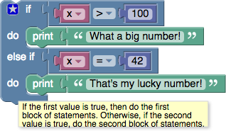
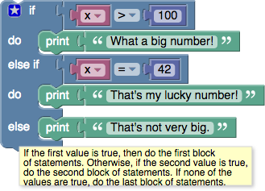
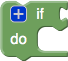
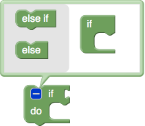
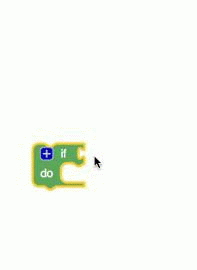

Conditional statements are central to computer programming. They make it possible to express statements like: * If there is a path to the left, turn left. * If score = 100, print "Well done!".
See additional information about conditional statements.
Blocks
If blocks
The simplest conditional statement is an if block, as shown:

When run, this will compare the value of the variable x to 100. If it is larger, "What a big number!" will be printed. Otherwise, nothing happens.
If-Else blocks
It is also possible to specify that something should happen if the condition is not true, as shown in this example:

As with the previous block, "What a big number!" will be printed if x > 100; otherwise, "That's not very big." will be printed.
An if block may have zero or one else sections but not more than one.
If-Else-If blocks
It is also possible to test multiple conditions with a single if block by adding else if clauses:

The block first checks if x > 100, printing "What a big number!" if it is. If it is not, it goes on to check if x = 42. If so, it prints "That's my lucky number." Otherwise, nothing happens.
An if block may have any number of else if sections. Conditions are evaluated top to bottom until one is satisfied, or until no more conditions are left.
If-Else-If-Else blocks
As shown here, if blocks may have both else if and else sections:

The else section guarantees that some action is performed, even if none of the prior conditions are true.
An else section may occur after any number of else if sections, including zero.
Block Modification
Only the plain if block appears in the toolbox:

To add else if and else clauses, the user needs to click on the gear icon, which opens a new window:

The user can then drag else if and else clauses into the if block, as well as reordering and removing them. When finished, the user should click on the minus sign, which closes the window, as shown here:

Note that the shapes of the blocks allows any number of else if subblocks to be added but only up to one else block.
This document has been based on the Blockly documentation under the same title by Neil Fraser released under CC BY 3.0